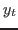
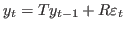
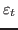
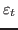
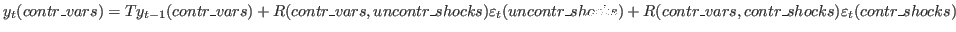
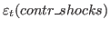

4.18 Forecasting
On a calibrated model, forecasting is done using the forecast
command. On an estimated model, use the forecast option of
estimation command.
It is also possible to compute forecasts on a calibrated or estimated
model for a given constrained path of the future endogenous
variables. This is done, from the reduced form representation of the
DSGE model, by finding the structural shocks that are needed to match
the restricted paths. Use conditional_forecast,
conditional_forecast_paths and plot_conditional_forecast
for that purpose.
Finally, it is possible to do forecasting with a Bayesian VAR using
the bvar_forecast command.
- Command: forecast [VARIABLE_NAME…];
- Command: forecast (OPTIONS…) [VARIABLE_NAME…];
-
Description
This command computes a simulation of a stochastic model from an
arbitrary initial point.
When the model also contains deterministic exogenous shocks, the
simulation is computed conditionally to the agents knowing the future
values of the deterministic exogenous variables.
forecast must be called after stoch_simul.
forecast plots the trajectory of endogenous variables. When a
list of variable names follows the command, only those variables are
plotted. A 90% confidence interval is plotted around the mean
trajectory. Use option conf_sig to change the level of the
confidence interval.
Options
periods = INTEGERNumber of periods of the forecast. Default: 5.
conf_sig = DOUBLELevel of significance for confidence
interval. Default: 0.90
nographSee nograph.
nodisplaySee nodisplay.
graph_format = FORMATgraph_format = ( FORMAT, FORMAT… )See graph_format.
Initial Values
forecast computes the forecast taking as initial values the values specified in histval (see histval). When no histval block is present, the initial values are the one stated in initval. When initval is followed by command steady, the initial values are the steady state (see steady).
Output
The results are stored in oo_.forecast, which is described below.
Example
varexo_det tau;
varexo e;
…
shocks;
var e; stderr 0.01;
var tau;
periods 1:9;
values -0.15;
end;
stoch_simul(irf=0);
forecast;
- MATLAB/Octave variable: oo_.forecast
Variable set by the forecast command, or by the
estimation command if used with the forecast option and
if no Metropolis-Hastings has been computed (in that case, the
forecast is computed for the posterior mode). Fields are of the form:
oo_.forecast.FORECAST_MOMENT.VARIABLE_NAME
where FORECAST_MOMENT is one of the following:
HPDinfLower bound of a 90% HPD interval8 of forecast due to parameter
uncertainty, but ignoring the effect of measurement error on
observed variables
HPDsupUpper bound of a 90% HPD forecast interval due to parameter uncertainty, but
ignoring the effect of measurement error on
observed variables
HPDinf_MELower bound of a 90% HPD interval9 of forecast for observed variables
due to parameter uncertainty and measurement error
HPDsup_MEUpper bound of a 90% HPD interval of forecast for observed variables
due to parameter uncertainty and measurement error
MeanMean of the posterior distribution of forecasts
MedianMedian of the posterior distribution of forecasts
StdStandard deviation of the posterior distribution of forecasts
- MATLAB/Octave variable: oo_.PointForecast
Set by the estimation command, if it is used with the
forecast option and if either mh_replic > 0 or
load_mh_file option is used.
Contains the distribution of forecasts taking into account the
uncertainty about both parameters and shocks.
Fields are of the form:
oo_.PointForecast.MOMENT_NAME.VARIABLE_NAME
- MATLAB/Octave variable: oo_.MeanForecast
Set by the estimation command, if it is used with the
forecast option and if either mh_replic > 0 or
load_mh_file option is used.
Contains the distribution of forecasts where the uncertainty about
shocks is averaged out. The distribution of forecasts therefore only
represents the uncertainty about parameters.
Fields are of the form:
oo_.MeanForecast.MOMENT_NAME.VARIABLE_NAME
- Command: conditional_forecast (OPTIONS…);
Description
This command computes forecasts on an estimated or calibrated model for a
given constrained path of some future endogenous variables. This is done
using the reduced form first order state-space representation of the DSGE
model by finding the structural shocks that are needed to match the
restricted paths. Consider the an augmented state space representation
that stacks both predetermined and non-predetermined variables into a
vector :

Both
 and  are split up into controlled and
uncontrolled ones to get:
and  are split up into controlled and
uncontrolled ones to get:

which can be solved algebraically for
.
Using these controlled shocks, the state-space representation can be used
for forecasting. A few things need to be noted. First, it is assumed that
controlled exogenous variables are fully under control of the policy
maker for all forecast periods and not just for the periods where the
endogenous variables are controlled. For all uncontrolled periods, the
controlled exogenous variables are assumed to be 0. This implies that
there is no forecast uncertainty arising from these exogenous variables
in uncontrolled periods. Second, by making use of the first order state
space solution, even if a higher-order approximation was performed, the
conditional forecasts will be based on a first order approximation.
Third, although controlled exogenous variables are taken as instruments
perfectly under the control of the policy-maker, they are nevertheless
random and unforeseen shocks from the perspective of the households. That is,
households are in each period surprised by the realization of a shock
that keeps the controlled endogenous variables at their respective level.
Fourth, keep in mind that if the structural innovations are correlated,
because the calibrated or estimated covariance matrix has non zero off
diagonal elements, the results of the conditional forecasts will depend on
the ordering of the innovations (as declared after varexo). As in VAR
models, a Cholesky decomposition is used to factorize the covariance matrix
and identify orthogonal impulses. It is preferable to declare the correlations
in the model block (explicitly imposing the identification restrictions),
unless you are satisfied with the implicit identification restrictions implied
by the Cholesky decomposition.
This command has to be called after estimation or stoch_simul.
Use conditional_forecast_paths block to give the list of
constrained endogenous, and their constrained future path.
Option controlled_varexo is used to specify the structural shocks
which will be matched to generate the constrained path.
Use plot_conditional_forecast to graph the results.
Options
parameter_set = calibration | prior_mode | prior_mean | posterior_mode | posterior_mean | posterior_medianSpecify the parameter set to use for the forecasting. No default
value, mandatory option. Note that in case of estimated models, conditional_forecast does not support the prefilter-option.
controlled_varexo = (VARIABLE_NAME…)Specify the exogenous variables to use as control variables. No
default value, mandatory option.
periods = INTEGERNumber of periods of the forecast. Default: 40. periods
cannot be less than the number of constrained periods.
replic = INTEGERNumber of simulations. Default: 5000.
conf_sig = DOUBLELevel of significance for confidence interval. Default: 0.90
Output
The results are not stored in the oo_ structure but in a separate structure forecasts saved to the harddisk into a file called conditional_forecasts.mat.
- MATLAB/Octave variable: forecasts.cond
Variable set by the conditional_forecast command. It stores the conditional forecasts. Fields are periods+1 by 1 vectors storing the steady state (time 0) and the subsequent periods forecasts periods. Fields are of the form:
forecasts.cond.FORECAST_MOMENT.VARIABLE_NAME
where FORECAST_MOMENT is one of the following:
MeanMean of the conditional forecast distribution.
ciConfidence interval of the conditional forecast distribution. The size corresponds to conf_sig.
- MATLAB/Octave variable: forecasts.uncond
Variable set by the conditional_forecast command. It stores the unconditional forecasts. Fields are of the form:
forecasts.uncond.FORECAST_MOMENT.VARIABLE_NAME
- MATLAB/Octave variable: forecasts.instruments
Variable set by the conditional_forecast command. Stores the names of the exogenous instruments.
- MATLAB/Octave variable: forecasts.controlled_variables
Variable set by the conditional_forecast command. Stores the position of the constrained endogenous variables in declaration order.
- MATLAB/Octave variable: forecasts.controlled_exo_variables
Variable set by the conditional_forecast command. Stores the values of the controlled exogenous
variables underlying the conditional forecasts to achieve the constrained endogenous
variables. Fields are number of constrained periods by 1 vectors and are of the form:
forecasts.controlled_exo_variables.FORECAST_MOMENT.SHOCK_NAME
- MATLAB/Octave variable: forecasts.graphs
Variable set by the conditional_forecast command. Stores the information for generating the conditional forecast plots.
Example
var y a
varexo e u;
…
estimation(…);
conditional_forecast_paths;
var y;
periods 1:3, 4:5;
values 2, 5;
var a;
periods 1:5;
values 3;
end;
conditional_forecast(parameter_set = calibration, controlled_varexo = (e, u),
replic = 3000);
plot_conditional_forecast(periods = 10) a y;
- Block: conditional_forecast_paths ;
-
Describes the path of constrained endogenous, before calling
conditional_forecast. The syntax is similar to deterministic
shocks in shocks, see conditional_forecast for an
example.
The syntax of the block is the same as for the deterministic shocks in
the shocks blocks (see Shocks on exogenous variables). Note that you need to specify the full path for all constrained endogenous
variables between the first and last specified period. If an intermediate period
is not specified, a value of 0 is assumed. That is, if you specify only
values for periods 1 and 3, the values for period 2 will be 0. Currently, it is not
possible to have uncontrolled intermediate periods.
In case of the presence of observation_trends, the specified controlled path for
these variables needs to include the trend component. When using the loglinear option,
it is necessary to specify the logarithm of the controlled variables.
- Command: plot_conditional_forecast [VARIABLE_NAME…];
- Command: plot_conditional_forecast (periods = INTEGER) [VARIABLE_NAME…];
Description
Plots the conditional (plain lines) and unconditional (dashed lines) forecasts.
To be used after conditional_forecast.
Options
periods = INTEGERNumber of periods to be plotted. Default: equal to periods in
conditional_forecast. The number of periods declared in
plot_conditional_forecast cannot be greater than the one
declared in conditional_forecast.
- Command: bvar_forecast ;
This command computes (out-of-sample) forecasts for an estimated BVAR
model, using Minnesota priors.
See bvar-a-la-sims.pdf, which comes with Dynare distribution,
for more information on this command.
If the model contains strong non-linearities or if some perfectly expected shocks are considered, the forecasts and the conditional forecasts
can be computed using an extended path method. The forecast scenario describing the shocks and/or the constrained paths on some endogenous variables should be build.
The first step is the forecast scenario initialization using the function init_plan:
- MATLAB/Octave command: HANDLE = init_plan (DATES) ;
-
Creates a new forecast scenario for a forecast period (indicated as a dates class, see dates class members). This function return a handle on the new forecast scenario.
The forecast scenario can contain some simple shocks on the exogenous variables. This shocks are described using the function basic_plan:
- MATLAB/Octave command: HANDLE = basic_plan (HANDLE, 'VARIABLE_NAME', 'SHOCK_TYPE', DATES, MATLAB VECTOR OF DOUBLE | [DOUBLE | EXPRESSION [DOUBLE | | EXPRESSION] ] ) ;
-
Adds to the forecast scenario a shock on the exogenous variable indicated between quotes in the second argument. The shock type has to be specified in the third argument between quotes: ’surprise’ in case of an unexpected shock or ’perfect_foresight’ for a perfectly anticipated shock. The fourth argument indicates the period of the shock using a dates class (see dates class members). The last argument is the shock path indicated as a Matlab vector of double. This function return the handle of the updated forecast scenario.
The forecast scenario can also contain a constrained path on an endogenous variable. The values of the related exogenous variable compatible with the constrained path are in this case computed. In other words, a conditional forecast is performed. This kind of shock is described with the function flip_plan:
- MATLAB/Octave command: HANDLE = flip_plan (HANDLE, 'VARIABLE_NAME, 'VARIABLE_NAME', 'SHOCK_TYPE', DATES, MATLAB VECTOR OF DOUBLE | [DOUBLE | EXPRESSION [DOUBLE | | EXPRESSION] ] ) ;
-
Adds to the forecast scenario a constrained path on the endogenous variable specified between quotes in the second argument. The associated exogenous variable provided in the third argument between quotes, is considered as an endogenous variable and its values compatible with the constrained path on the endogenous variable will be computed. The nature of the expectation on the constrained path has to be specified in the fourth argument between quotes: ’surprise’ in case of an unexpected path or ’perfect_foresight’ for a perfectly anticipated path. The fifth argument indicates the period where the path of the endogenous variable is constrained using a dates class (see dates class members). The last argument contains the constrained path as a Matlab vector of double. This function return the handle of the updated forecast scenario.
Once the forecast scenario if fully described, the forecast is computed with the command det_cond_forecast:
- MATLAB/Octave command: DSERIES = det_cond_forecast (HANDLE[, DSERIES [, DATES]]) ;
-
Computes the forecast or the conditional forecast using an extended path method for the given forecast scenario (first argument). The past values of the endogenous and exogenous variables provided with a dseries class (see dseries class members) can be indicated in the second argument. By default, the past values of the variables are equal to their steady-state values. The initial date of the forecast can be provided in the third argument. By default, the forecast will start at the first date indicated in the init_plan command. This function returns a dset containing the historical and forecast values for the endogenous and exogenous variables.
Example
/* conditional forecast using extended path method
with perfect foresight on r path*/
var y r
varexo e u;
…
smoothed = dseries('smoothed_variables.csv');
fplan = init_plan(2013Q4:2029Q4);
fplan = flip_plan(fplan, 'y', 'u', 'surprise', 2013Q4:2014Q4, [1 1.1 1.2 1.1 ]);
fplan = flip_plan(fplan, 'r', 'e', 'perfect_foresight', 2013Q4:2014Q4, [2 1.9 1.9 1.9 ]);
dset_forecast = det_cond_forecast(fplan, smoothed);
plot(dset_forecast.{'y','u'});
plot(dset_forecast.{'r','e'});
- Command: smoother2histval [(OPTIONS…)]
-
Description
The purpose of this command is to construct initial conditions (for a
subsequent simulation) that are the smoothed values of a previous estimation.
More precisely, after an estimation run with the smoother option,
smoother2histval will extract the smoothed values (from
oo_.SmoothedVariables, and possibly from oo_.SmoothedShocks if
there are lagged exogenous), and will use these values to construct initial
conditions (as if they had been manually entered through histval).
Options
period = INTEGERPeriod number to use as the starting point for the subsequent simulation.
It should be between 1 and the number of observations that were used to produce the
smoothed values. Default: the last observation.
infile = FILENAMELoad the smoothed values from a _results.mat file created by a previous
Dynare run. Default: use the smoothed values currently in the global workspace.
invars = ( VARIABLE_NAME [VARIABLE_NAME …] )A list of variables to read from the smoothed values. It can contain state
endogenous variables, and also exogenous variables having a lag. Default: all
the state endogenous variables, and all the exogenous variables with a lag.
outfile = FILENAMEWrite the initial conditions to a file. Default: write the initial conditions
in the current workspace, so that a simulation can be performed.
outvars = ( VARIABLE_NAME [VARIABLE_NAME …] )A list of variables which will be given the initial conditions. This list must
have the same length than the list given to invars, and there will be a
one-to-one mapping between the two list. Default: same value as option
invars.
Use cases
There are three possible ways of using this command:
- Everything in a single file: run an estimation with a smoother, then run
smoother2histval (without the infile and outfile options), then run a stochastic simulation.
- In two files: in the first file, run the smoother and then run
smoother2histval with the outfile option; in the second file, run histval_file to load the initial conditions, and run a (deterministic or stochastic) simulation
- In two files: in the first file, run the smoother; in the second file, run
smoother2histval with the infile option equal to the _results.mat file created by the first file, and then run a (deterministic or stochastic) simulation